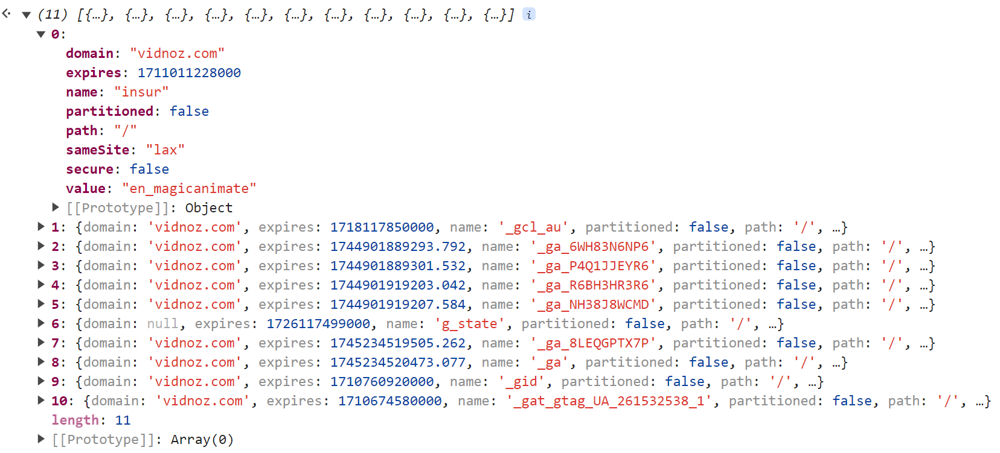
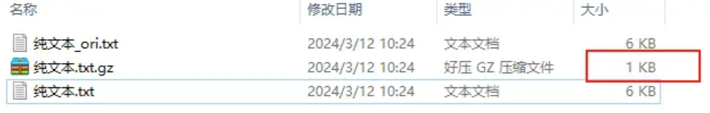
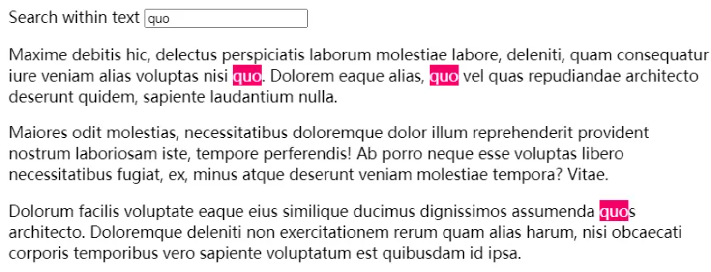
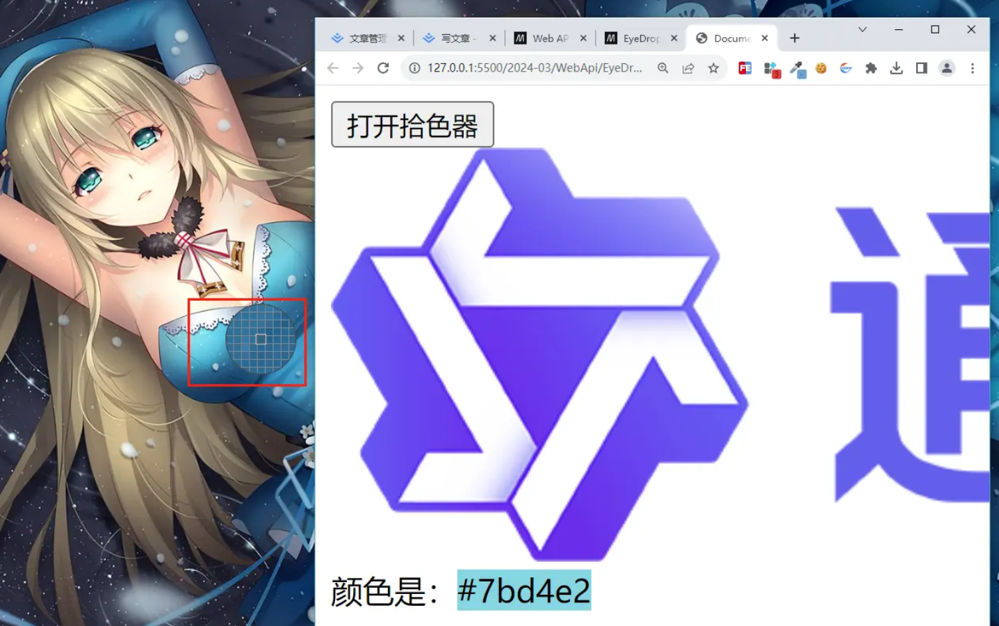
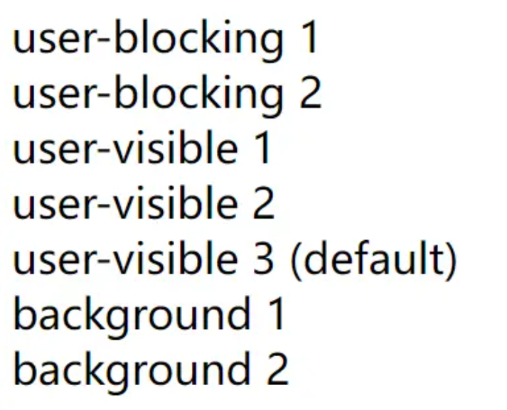

Screen Wake Lock API 提供了一种方式，使得当应用程序需要保持运行时，能够防止设备因为闲置而自动调低亮度或锁定屏幕。
这对于如视频会议、演示文稿、实时游戏、在线教育等需要用户持续关注且不允许屏幕熄灭的应用场景尤其有用。
通过这个 API，即使在没有用户交互的情况下，开发者也能确保屏幕始终保持开启状态。
<button onclick="onLockScreen()">锁屏</button>
<button onclick="onUnlockScreen()">释放</button>
<div id="statusElem"></div>
let wakeLock = null;
async function onLockScreen() {
try {
wakeLock = await navigator.wakeLock.request("screen");
statusElem.textContent = "唤醒锁已激活";
wakeLock.addEventListener("release", () => {
statusElem.textContent = "唤醒锁已释放";
});
} catch (err) {
statusElem.textContent = `${err.name}, ${err.message}`;
}
}
async function onUnlockScreen() {
if (!wakeLock) return;
wakeLock.release().then(() => {
wakeLock = null;
});
}
按照以往，开发者如何获取 cookie 信息呢？当前是 document.cookie。
这种的缺点是没法知道 domain、path、expired 等信息。
Cookie Store API 可以获取开发工具的 cookie 属性，当然，具有 HttpOnly 的属性的是获取不到的。
await cookieStore.getAll();

当然还提供了
cookieStore.delete: 删除
cookieStore.get: 获取单个 cookie 信息
cookieStore.set: 设置单个 cookie 信息
Compression Stream API 提供一种 Js API，使用 gzip 或者默认格式压缩和解压缩数据流，内置的压缩库意味着 Js 应用不再需要包含其他压缩库，这使得应用程序的下载大小更小。
比如下面上传一个文本文件到浏览器，代码采用 gzip 压缩纯文本之后，从 6kb 变为了 1kb，解压缩后又变成了 6kb。

<input type="file" id="file" />
<script>
async function compressAndDownload(filename, content) {
// 创建原始数据流
const stringStream = new ReadableStream({
start(controller) {
controller.enqueue(new TextEncoder().encode(content));
controller.close();
},
});
// 创建压缩流
const compressionStream = new CompressionStream("gzip");
// 将原始数据流连接到压缩流
const compressedStream = stringStream.pipeThrough(compressionStream);
// 创建ArrayBuffer容器接收压缩数据
const chunks = [];
const reader = compressedStream.getReader();
try {
while (true) {
const { done, value } = await reader.read();
if (done) break;
chunks.push(value);
}
} finally {
reader.releaseLock();
}
// 合并压缩数据并创建Blob
const compressedBlob = new Blob(chunks, { type: "application/gzip" });
// 创建下载链接
const url = URL.createObjectURL(compressedBlob);
const link = document.createElement("a");
link.href = url;
link.download = `${filename}.gz`;
document.body.appendChild(link);
// 触发下载
link.click();
// 清理
setTimeout(() => {
document.body.removeChild(link);
URL.revokeObjectURL(url);
}, 0);
}
file.addEventListener("change", async (event) => {
if (event.target.files.length === 0) {
return;
}
const file = event.target.files[0];
const reader = new FileReader();
reader.readAsText(event.target.files[0]);
reader.onload = async () => {
const content = reader.result;
compressAndDownload(file.name, content);
};
});
</script>
CSS 自定义高亮 API 提供了一种方法，可以通过使用 Js 创建范文并使用 CSS 定义样式来设置文档中任意文本范围的样式。

其逻辑就是查找所有文本节点，收集匹配内容的 Range，最后作为参数构建 HighLight 对象，需要注意的是其 并未产生新的节点。
const query = document.getElementById("query");
const article = document.querySelector("article");
// Find all text nodes in the article. We'll search within these text nodes.
const treeWalker = document.createTreeWalker(article, NodeFilter.SHOW_TEXT);
const allTextNodes = [];
let currentNode = treeWalker.nextNode();
while (currentNode) {
allTextNodes.push(currentNode);
currentNode = treeWalker.nextNode();
}
// Listen to the input event to run the search.
query.addEventListener("input", () => {
// If the CSS Custom Highlight API is not supported, display a message and bail-out.
if (!CSS.highlights) {
article.textContent = "CSS Custom Highlight API not supported.";
return;
}
// Clear the HighlightRegistry to remove the previous search results.
CSS.highlights.clear();
// Clean-up the search query and bail-out if if it's empty.
const str = query.value.trim().toLowerCase();
if (!str) {
return;
}
// Iterate over all text nodes and find matches.
const ranges = allTextNodes
.map((el) => {
return { el, text: el.textContent.toLowerCase() };
})
.map(({ text, el }) => {
const indices = [];
let startPos = 0;
while (startPos < text.length) {
const index = text.indexOf(str, startPos);
if (index === -1) break;
indices.push(index);
startPos = index + str.length;
}
// Create a range object for each instance of str we found in the text node.
return indices.map((index) => {
const range = new Range();
range.setStart(el, index);
range.setEnd(el, index + str.length);
return range;
});
});
// Create a Highlight object for the ranges.
const searchResultsHighlight = new Highlight(...ranges.flat());
// Register the Highlight object in the registry.
CSS.highlights.set("search-results", searchResultsHighlight);
});
可以打开并使用它从屏幕上选择颜色。

<button id="start-button">打开拾色器</button>
<img
src="https://img.alicdn.com/imgextra/i1/O1CN01CC9kic1ig1r4sAY5d_!!6000000004441-2-tps-880-210.png"
/>
<div>颜色是：<span id="result"></span></div>
<script>
document.getElementById("start-button").addEventListener("click", () => {
const resultElement = document.getElementById("result");
if (!window.EyeDropper) {
resultElement.textContent = "你的浏览器不支持 EyeDropper API";
return;
}
const eyeDropper = new EyeDropper();
const abortController = new AbortController();
eyeDropper
.open({ signal: abortController.signal })
.then((result) => {
resultElement.textContent = result.sRGBHex;
resultElement.style.backgroundColor = result.sRGBHex;
})
.catch((e) => {
resultElement.textContent = e;
});
});
</script>
提供了一种标准化的方法，用于对属于应用程序的所有任务进行优先级排序。
优先级任务调度 API 允许开发者为异步任务分配优先级，这些任务按照以下三种优先级顺序执行：
user-blocking：这类任务优先级最高，它们直接影响用户的交互体验。这类任务主要包括页面渲染至可交互状态的过程，以及对用户输入的即时响应。例如，页面初次加载的核心内容渲染、按钮点击事件的处理等。
user-visible： 这类任务虽可见于用户界面，但并不阻止用户继续进行其他操作。这类任务包括渲染页面的非关键部分，例如非核心图片加载、非关键动画渲染等。这是默认的优先级等级。
background： 优先级最低的一类任务，它们对时间要求不严苛，可以在不影响用户体验的前提下稍后执行。这类任务包括日志处理、非必需的第三方库初始化以及其他不影响页面即时呈现的工作。这些任务通常在主线程空闲时执行，以避免阻塞用户可见或交互相关的高优先级任务。
<div id="log"></div>
<script>
let log = document.getElementById("log");
function mylog(text) {
log.innerHTML += `${text}<br/>`;
}
// three tasks, in reverse order of priority
scheduler.postTask(() => mylog("background 1"), { priority: "background" });
scheduler.postTask(() => mylog("user-visible 1"), {
priority: "user-visible",
});
scheduler.postTask(() => mylog("user-blocking 1"), {
priority: "user-blocking",
});
// three more tasks, in reverse order of priority
scheduler.postTask(() => mylog("background 2"), { priority: "background" });
scheduler.postTask(() => mylog("user-visible 2"), {
priority: "user-visible",
});
scheduler.postTask(() => mylog("user-blocking 2"), {
priority: "user-blocking",
});
// Task with default priority: user-visible
scheduler.postTask(() => mylog("user-visible 3 (default)"));
</script>

为 Web 开发者提供了一种锁定 DOM API 中不安全部分的方法，目的是防止客户端跨站脚本（Cross-site scripting，XSS）攻击
在下面的例子中，通过 TrustedTypePolicyFactory.createPolicy() 方法创建一个策略，通过 TrustedTypePolicy.createHTML 方法创建一个安全的 HTML 字符串插入到文档中。
有很大的灵活性，策略是自己可以定义的。
<div id="myDiv"></div>
<script>
var entityMap = {
"&": "&",
"<": "<",
">": ">",
'"': """,
"'": "'",
"/": "/",
};
// 创建一个策略，该策略将用于将不受信任的输入转换为安全的内容。
const escapeHTMLPolicy = trustedTypes.createPolicy("myEscapePolicy", {
createHTML: (string) =>
string.replace(/[&<>"'\/]/g, function (s) {
return entityMap[s];
}),
});
let el = document.getElementById("myDiv");
const escaped = escapeHTMLPolicy.createHTML("<img src=x onerror=alert(1)>");
console.log(escaped instanceof TrustedHTML); // true
el.innerHTML = escaped;
</script>
除此之外，还可以用来创建用来检查 Script 和 ScriptURL 的策略。
const policy = trustedTypes.createPolicy("myPolicy", {
createScriptURL: (s, type, sink) => {
//...
},
createScript: (s) => {
//...
},
});
CSS 字体加载 API 为你提供了动态加载字体资源的事件和接口。
以往引入字体主要是靠 css 来实现的, 动态引入字体也可以通过动态添加 link 节点来实现。
@font-face {
font-family: "MyCustomFont";
src: url("fonts/mycustomfont.woff2") format("woff2"), url("fonts/mycustomfont.woff")
format("woff");
font-weight: normal;
font-style: normal;
}
现在内置了原生 API， 能动态加载字体，而且能控制加载时机，以及加载的状态。
const font = new FontFace("myfont", "url(myfont.woff)", {
style: "italic",
weight: "400",
stretch: "condensed",
});
// 加载字体
font.load().then(
() => {
// 加载完毕
},
(err) => {
// 加载异常
console.error(err);
}
);
// 等待到所有的字体都加载完毕
document.fonts.ready.then(() => {
// 使用该字体渲染文字（如：在 canvas 中绘制）
});
URL Pattern API 定义了一种语法，该语法用于创建 URL 模式匹配器。这些模式能够与完整的 URL 或 URL 的各个组成部分进行匹配。 其借鉴了 path-to-regexp的语法。
匹配模块包含： URL Pattern API 的模式语法包括：
字面字符串：将精确匹配的文本字符串，例如 "/home" 或 "/contact"。
通配符：如 "/posts/ " 中的星号 ( ) 表示匹配任何字符序列，直至遇到下一个路径分隔符（/）。
命名组：如 "/books/:id" 中的 ":id"，它会提取匹配 URL 中对应部分的值，作为单独的数据项。
非捕获组：如 "/books{/old}?"，这里的花括号 {...}? 表示该部分模式是可选的，可以匹配 0 次或 1 次，且不会作为一个单独的数据项提取出来。
正则表达式组：如 "/books/(\d+)" 中的 (\d+)，这部分遵循 JavaScript 正则表达式的规则，用于进行复杂匹配，尽管在 URL Pattern API 中有一定的限制。例如，此处的正则表达式将匹配一个或多个数字字符，并将其作为一个独立的数据项提取出来。
// A pattern matching with a named group
const pattern = new URLPattern({ pathname: "/books/:id" });
console.log(pattern.test("https://example.com/books/123")); // true
console.log(pattern.exec("https://example.com/books/123").pathname.groups); // { id: '123' }
音频输出设备 API（Audio Output Devices API）赋予了 Web 应用程序能力，使其能够询问用户希望使用哪个音频输出设备进行声音播放。
欸， 可以选择音频输出设备，还是比较有意思的。协议原文 Audio Output Devices API， 可惜还没有浏览器支持。
document.querySelector("#myButton").addEventListener("click", async () => {
if (!navigator.mediaDevices.selectAudioOutput) {
console.log("selectAudioOutput() not supported or not in secure context.");
return;
}
// Display prompt to select device
const audioDevice = await navigator.mediaDevices.selectAudioOutput();
// Create an audio element and start playing audio on the default device
const audio = document.createElement("audio");
audio.src = "https://example.com/audio.mp3";
audio.play();
// Change the sink to the selected audio output device.
audio.setSinkId(audioDevice.deviceId);
});
传统上，开发人员评估客户端设备性能时，由于无法直接获取设备的 RAM 大小信息，他们往往需要采取一些经验法则，或是通过设备基准测试，抑或是根据设备制造商、用户代理(User Agent)字符串等其他因素间接推测设备能力。
但现在，有以下两种方法可以直接或间接确定设备的大致 RAM 量：
Device Memory JavaScript API： 这个 API 为开发者提供了一种直接了解设备内存（RAM）容量的方式。通过navigator.deviceMemory属性，可以获得设备内存级别的大致信息，如 0.5 表示小于 1GB 的 RAM，1 表示 1-2GB，以此类推。
接受 Client Hints： 客户端提示（Client Hints）是一种 HTTP 协议扩展，允许浏览器在 HTTP 请求中主动发送设备能力相关信息。其中，Device-Memory HTTP 请求头就包含了设备的内存类别信息。虽然这不是直接在 JavaScript 中获取，但服务器可以根据这个头信息动态调整响应内容，帮助开发者根据设备 RAM 大小优化用户体验。
const RAM = navigator.deviceMemory; // 8
值是 0.25, 0.5, 1, 2, 4，8 之一，所以机器 16G 内存，显示的也是 8。
用于检测图像中的条形码和二维码。
欸， 这就很有意思，配和 navigator.mediaDevices.getUserMedia唤起摄像头，定期截图分析，是不是就是一个 web 版本的扫码能力呢？
) {
console.log("此浏览器不支持条形码检测器。");
} else {
console.log("条形码检测器是支持的！");
// 创建新检测器
const barcodeDetector = new BarcodeDetector({
formats: ["code_39", "codabar", "ean_13"],
});
barcodeDetector
.detect(imageEl)
.then((barcodes) => {
barcodes.forEach((barcode) => console.log(barcode.rawValue));
})
.catch((err) => {
console.log(err);
});
}
CSS Typed Object Model（CSSOM）API 从根本上改变了开发者在 JavaScript 中处理 CSS 属性的方式，通过引入类型安全性和效率优化。
比如：简简单单就能获取样式的键值对， 其实还有一个结果有类似功能 API window.getComputedStyle
![](../assets/images/articles/129/02.awebp" />